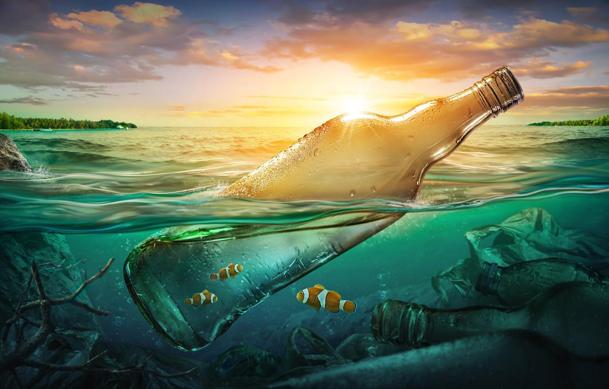
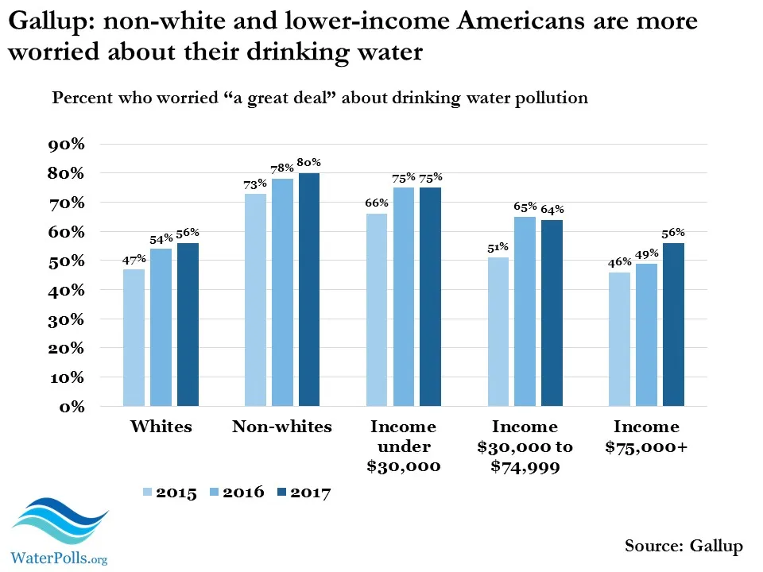

DONT USE PLASTIC IT IS VERY HARMFUL
WHAT IS POLLUTION
Pollution is a term which even kids are aware of these days. It has become so common that almost everyone acknowledges the fact that pollution is rising continuously. The term ‘pollution’ means the manifestation of any unsolicited foreign substance in something. When we talk about pollution on earth, we refer to the contamination that is happening of the natural resources by various pollutants. All this is mainly caused by human activities which harm the environment in ways more than one. Therefore, an urgent need has arisen to tackle this issue straightaway. That is to say, pollution is damaging our earth severely and we need to realize its effects and prevent this damage. In this essay on pollution, we will see what are the effects of pollution and how to reduce it.

EFFECTS OF POLLUTION
Pollution affects the quality of life more than one can imagine. It works in mysterious ways, sometimes which cannot be seen by the naked eye. However, it is very much present in the environment. For instance, you might not be able to see the natural gases present in the air, but they are still there. Similarly, the pollutants which are messing up the air and increasing the levels of carbon dioxide is very dangerous for humans. Increased level of carbon dioxide will lead to global warming. Further, the water is polluted in the name of industrial development, religious practices and more will cause a shortage of drinking water. Without water, human life is not possible. Moreover, the way waste is dumped on the land eventually ends up in the soil and turns toxic. If land pollution keeps on happening at this rate, we won’t have fertile soil to grow our crops on. Therefore, serious measures must be taken to reduce pollution to the core.

WATER POLLUTION
Pollution is known as the dangerous crisis of environment. Among various types of pollution water pollution costs a great loss for human.Water is one of the most valuable elements of environment. But mostly human are responsible for polluting this valuable element.There are many reason for water pollution. By throwing plastic bags and polythene people pollutes water. People also taint water through throwing household wastes. Often the scene of bathing cows and goats are seen on the banks of river. This is another reason of polluting water. Now a days industrial factories are set up on the bank of river. As a result industrial waste and radioactive waste are fallen into the river which pollutes the water. For agricultural purpose pesticides is used. This pesticides are washed into rivers by rain water. As it is seen that water is polluted by human but also human get punished for this contamination. As the result of water pollution we face acid rain. It is harmful for our agricultural land. This acid rain reduces soil fertility. It also effects our economy. Again if we use the polluting water for our regular use we can be caught by different disease. Such as by drinking these polluting water, diarrhea, cholera and other skin disease can attack. Water pollution is harmful for both human and environment. Water is such an important element of environment. People should be careful of throwing wastes into river. So in order to keep the water clean and keep ourselves free from disease we should not pollute water anymore.Earth comprises about 70% of water, where humans and animals consume only 1% of fresh and healthy water for drinking. Humans consume freshwater for daily activities, so we should be serious about protecting it from pollution. Water pollution is a serious environmental problem prevailing in our society. Human-made activities like intensive agriculture, urbanization, deforestation, and industrialization have escalated water bodies’ pollution.
SOME DATA OF WATER POLLUTION
HOW CAN WE REDUCE OUR PLASTIC WASTE TO CONTROLL WATER POLLUTION?
Now onto the most important part – how can we make a difference? Luckily there are several changes you can implement as an individual that can have a positive impact. However, it is worth mentioning that individual actions are not enough by themselves. In our interview with Professor Karl Williams at the University of Central Lancashire, he describes how legislation and policy are key to tackling global plastic pollution. This can be anything from laws about littering to waste shipment and waste management legislation. So keep in mind, throughout these tips, that there are things beyond your control. You can, however, try to sway governments and politicians in your direction by emailing them, signing petitions and protesting. From there, governments can put pressure on manufacturers and corporations to make changes. Without further ado, here are 20 tips on how you can reduce plastic waste in your daily life: 1. Recycle when possible (and do it properly) Recycling, whenever you can, has a positive impact on the planet as it prevents too many plastics from ending up in landfills. Of course, recycling systems aren’t perfect, but recycling is still more productive than chucking everything in the same bin. Different countries have different recycling systems and rules, but here are three rules that generally can be followed no matter where you are: Recycle clean bottles, cans, paper and cardboard. Don’t put food or liquids in your recycling. No loose plastic bags or recycled goods should be placed in plastic bags. 2. Avoid single-use plastics Single-use plastic items are one of the biggest offenders when it comes to plastic pollution. You might find it harder than you’d think to stay away from them, but noticing how prevalent they are in daily life is a good first step. Some common examples that contain single-use plastic include plastic-wrapped vegetables in supermarkets, wet wipes, cotton buds, plastic cutlery, coffee cups, straws, sanitary products and cigarettes. Luckily, there are plenty of alternatives if you look for them. 3. Use alternative packaging If you own a small business, it can really make a difference if you look for alternative packaging options. Whether you own a cafe or have a small business on Etsy, you could try more sustainable packaging options, including paper and cardboard. If you work in the food industry, you might be interested in our Introduction to Sustainable Practices in Food Service course by International Culinary Studio. Sometimes, we do need packaging that at least emulates plastic in order to protect products, particularly when it comes to food. Bioplastics are plastics made from renewable, bio-based materials like cellulose, and they have the potential to biodegrade more quickly than normal plastics. 4. Do a trash audit A trash audit is basically where you take a look at your rubbish and track what you’re throwing away frequently. Often, we throw things away without a second thought, so this is a great way of understanding exactly how much waste we create. A trash audit also allows us to find substitutes for our most regularly discarded items. For example, if you find a lot of coffee cups in the trash, you know it’s time to buy a reusable cup. Alternatively, if you have a lot of crisp packets, consider buying a bigger packet next time and finding packaging that’s recyclable. Or, you could look into a scheme like Terracycle that helps you recycle crisp packets. 5. Find reusable options We touched on this in our previous points about single-use plastics, but finding reusable alternatives is the best way to ensure that you stop using so many single-use plastic items. These don’t have to be fancy bamboo alternatives either – even placing regular metal cutlery in your bag, or taking an old plastic water bottle with you to work will suffice. There are even alternative options to things like clingfilm – learn to make your own zero-waste bio-based clingfilm in our open step. To learn more about making sustainable choices, join our Exploring Sustainable Living and Loving with Mogli course by Tommy Hilfiger. 6. Grow your own food As we mentioned earlier, lots of vegetables and fruits are covered in plastics at the supermarket. To avoid this problem entirely whilst also learning to be more self-sufficient, why not try growing your own food? With help from our course How to Grow Healthy Plants by Gardeners World Magazine, you’ll be growing your own herbs and veggies in no time. 7. Buy from local markets and low-waste shops If you don’t quite have the time and energy to grow your own food, consider buying food from local markets and low-waste shops instead. Depending on the country you live in, buying from markets can be either more or less expensive than supermarkets – so it’s a good idea to do some research beforehand and find the best option for you. Low-waste shops are notably more expensive, but they can be a great option for dried goods such as pasta, rice, pulses and nuts. You usually bring your own containers with you and fill them as needed – no waste created! You can learn more about tackling food waste in our course, From Waste to Value: How to Tackle Food Waste.